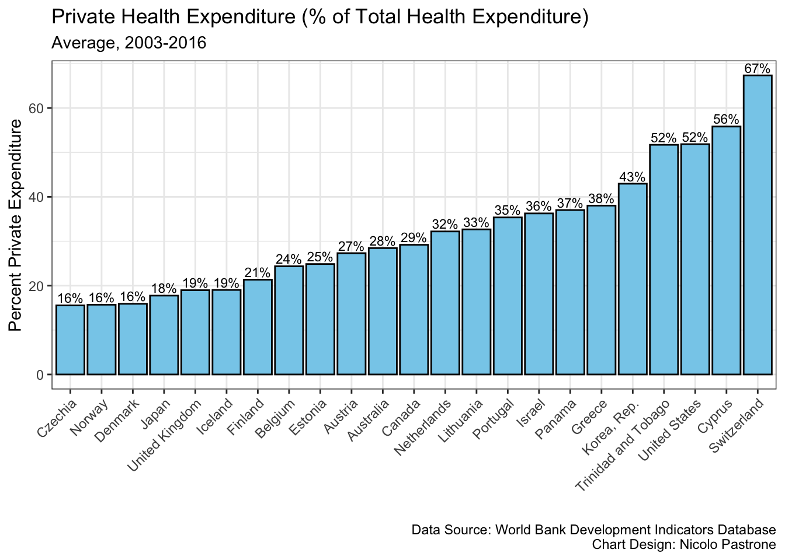
Examining the Effects of Private and Public Health Expenditure on Chronic Health Outcomes in the Developed World
Abstract
This research compares private and government health expenditure in 23 developed countries around the world, examining the relationship between each type of health expenditure on chronic health conditions for the period from 2003 to 2016. While previous literature has examined the association between private and government health expenditure and chronic non-communicable diseases (NCDs) at a region level, this research studies this association at a global level, as well as investigating the relationship between health expenditure and two other chronic health indicators: overweight and hypertension. The findings showed a positive association between both private and government health expenditure and the rate of overweight adults, but no meaningful association was found between either type of health expenditure and the rate of hypertension. However, these results must be cautiously interpreted due to limitations with endogeneity and potential reverse causality. Regarding NCDs, this research found government health expenditure to be meaningfully associated with reduced NCD mortality rate, while no such association was found for private health expenditure. This is this study’s primary contribution to the discussion: a $1000 increase in government health expenditure per capita is estimated to decrease the rate of NCD mortality by 0.571 percent (p-value = 0.0118), while holding constant all other predictors in the model and controlling for temporal and spatial effects.
Introduction
The vitality of a well-functioning health care system, as well as the disparity in health outcomes around the world, causes questions about the health industry – such as the optimal source of funding and the optimal role of government – to be placed at the forefront of global political and economic debate. Lawmakers must decide what combination of government health expenditure and private health expenditure should be used to fund their health care system.
In the developed world – the focus of this study – there is no clear consensus on the best answer to this question. The Czech Republic, Norway, and Denmark fund just 16 percent of total health expenditure through the private sector, while the rate of health care privatization in the United States, Cyprus, and Switzerland is 52, 56, and 67 percent, respectively.
The question of how best to finance medical expenditure cannot be reduced to the oversimplification of whether private or public funding should be favored: most countries utilize some combination of the two, and countries with high and those with low levels of health care privatization have both proven capable of generating positive health outcomes. Switzerland, with 67 percent of health expenditure dedicated to private sector spending, and Norway, with only 16 percent private health expenditure, both fall within the top 12 of Worldometer’s 2024 life expectancy at birth rankings, with Switzerland 5th and Norway 12th.[1] A less bureaucratic private sector could be capable of quicker innovation, while a more liable government may have more incentive to prioritize health over profit.
The ever-complicated relationship between government and industry, global structural differences in health care systems, and the incalculable number of factors that influence health outcomes make dollar-for-dollar comparisons of the effects of private health expenditure and government health expenditure extremely challenging. While recognizing these limitations, this paper attempts to examine how different kinds of health expenditure influence chronic health outcomes around the world.
Literature Summary and Contribution
Previous literature has examined the public-private health expenditure nexus, primarily focusing on how different types of health expenditure influence health outcomes related to lifespan, child mortality, and overall mortality, such as Novignon et al. (2012),[2] Raeesi et al. (2017),[3] Rahman et al. (2018),[4] and Ibukun (2021).[5]
Recent research has begun to examine the effects of health expenditure on chronic non-communicable diseases (NCDs), which account for 71 percent of global deaths, according to the World Health Organization.[6] Singh et al. (2021) studied the impact of health expenditure on NCD mortality rate in the Southeast Asian region and Singh et al. (2024) conducted a similar study in the Central European and Baltic region, but this discussion is extremely limited.[7][8]
The public-private health expenditure nexus’ effect on NCDs is a partial focus of this study, the first empirical analysis – to the author’s knowledge – to examine this relationship on a global scale. Additionally, this study takes a deeper look at the effects of public and private health expenditure on chronic health outcomes by examining the influence of health expenditures on rates of overweight and hypertension.
Literature Review
Novignon et al. (2012) used fixed and random effects panel data regression models to predict the effects of public health expenditure as a percentage of real national income, private health expenditure as a percentage of real national income, per capita real income, and age on life expectancy at birth, infant mortality rate, and death rate.[9] The scholars used World Bank Development Indicators data for 44 countries in Sub-Saharan Africa from 1995-2010. The empirical analysis found that both public and private health expenditure had significant effects in improving all examined health outcomes, and public health expenditure was more effective in improving all measures.
Raeesi et al. (2017) used a random effects least squares regression model to predict the effects of public health expenditure as a percentage of GDP, private health expenditure as a percentage of GDP, real per capita income, and per capita number of physicians on infant mortality, under-five mortality and life expectancy.[10] The research focused on 25 countries with differing health care systems during the period 2000-2015. According to the findings, in countries with health systems containing national health services, public health expenditure had a greater effect on improving health outcomes than private health expenditure, but in countries with mixed health systems, and those with traditional sickness insurance, private health expenditure was more effective in improving health outcomes.
Rahman et al. (2018) used fixed and random effects generalized least squares models to predict the effects of public health expenditure, private health expenditure, GDP per capita and improved sanitation facilities on life expectancy at birth, infant mortality rate, and crude death rate.[11] The research used data from 1960-2014 for 17 South Asian countries. The scholars found all types of health expenditure had no effect on increased life expectancy. Public health expenditure was more effective than private health expenditure in decreasing infant mortality rates. Contrastingly, public health expenditure contributed to higher death rates while private health expenditure contributed to lower death rates.
Ibukun (2021) used a two-stage least squares regression model to predict the effects of different types of health expenditure, GDP per capita, the quality of governance, urban population growth, and sanitation on infant mortality, under-five mortality and life expectancy at birth.[12] Ibukun’s research focused on West African countries over the period 2000-2018. The study found both public and private health expenditure to contribute to lower infant mortality and under-five mortality rates, though public health expenditure was more effective in both cases. Public health expenditure also showed a meaningful impact on higher life expectancy, while private health expenditure had no such effect.
Singh et al.’s research, in both 2021 and 2024, marks a shift in the literature as the scholars include the death rate from chronic non-communicable diseases (NCDs) in their vector of health outcomes, shifting the scholarly discussion toward examining chronic health conditions.
Singh et al. (2021) used a feasible generalized least squares regression model to predict the effects of public health spending per capita, private health spending per capita, GDP per capita, and educational attainment level on under-five mortality rate, mortality rate from chronic non-communicable diseases, and life expectancy at birth.[13] The scholars used World Bank Development Indicators and World Health Organization Data, focusing on the Southeast Asian Region during the period of 2005-2016. Their research finds that public health expenditure produced improvements in all examined health outcomes, while private health expenditure contributed to better health outcomes only in Brunei and Singapore, but not across the broader region. However, the scholars recognize their data includes missing values, and the weak effect of private health expenditure may warrant more research.
Singh et al. (2024) used a panel linear model to examine the public-private health expenditure nexus with data from Central Europe and the Baltic region spanning from 2000 to 2019.[14] The research finds that private health expenditure was associated with reductions in the rate of NCD mortality, as well as total health expenditure, but government health expenditure was associated with no such reduction in the NCD mortality rate. These findings diverge from the findings of Singh et al. (2021), in which public health expenditure was found to be more effective in improving health outcomes.
While Singh et al.’s research broke ground on analyzing the impact of public and private health expenditure on chronic conditions, the inconsistency of Singh’s findings and the minute body of literature makes clear the need for more research examining the role of different types of health expenditure on chronic health outcomes around the world. This study expands on the research of Singh et al. by examining the public-private health expenditure nexus in 23 developed countries, examining its effect on NCD mortality, the rate of overweight adults, and the rate of adults with hypertension.
Methodology
Data and Variables
This study used a balanced panel of data for 23 “developed” countries from 2003 to 2016. Countries with a GDP per capita greater than $25,0000 in 2016 were considered developed, following a common development threshold used by economists.[15] Developing countries were excluded from the study to limit endogeneity across economically dissimilar countries. For the purposes of this study, all monetary measures (including GDP per capita and health expenditure per capita) are adjusted for purchasing power parity (PPP), defined by the OECD as “the rates of currency conversion that try to equalize the purchasing power of different currencies, by eliminating the differences in price levels between countries.”[16] PPP adjustments were made considering the assumption that most most health expenditure happens domestically and health care costs depend on local price levels.
Data on health expenditure and economic statistics were sourced from the World Bank Development Indicators Database.[17] Data on health outcomes were sourced from the World Bank Health Nutrition and Population Statistics Database.[18] Data on food supply were sourced from the Food and Agriculture Organization of the United Nations Database.[19]
This study is limited by data availability but includes data for all developed countries with complete available data for all parameters of interest over the period studied. The balanced panel of 23 countries over a 14-year period results in a sample size of 322.
The parameters of interest are the following:
| Full Variable Name | Code Name |
|---|---|
| Country Name | country |
| Country Code | country_code |
| Year | year |
| Current health expenditure per capita, PPP (current international $) | current_health_exppc_ppp |
| Domestic general government health expenditure per capita, PPP (current international $) | government_health_exppc_ppp |
| Domestic private health expenditure per capita, PPP (current international $) | private_health_exppc_ppp |
| External health expenditure per capita, PPP (current international $) | external_health_exppc_ppp |
| Urban population (% of total population) | urban_population |
| GDP per capita, PPP (current international $) | gdppc_ppp |
| Unemployment, total (% of total labor force) (national estimate) | unemployment_rate |
| Prevalence of overweight (% of adults) | overweight_rate |
| Prevalence of hypertension (% of adults ages 30-79) | hypertension_rate |
| Mortality from CVD, cancer, diabetes or CRD between exact ages 30 and 70 (%) | disease_mortality_rate |
| Food supply (kcal per capita per day) | kcal_per_capita |
Country Name, Country Code, and Year are identifier variables. Current health expenditure per capita refers to the total health expenditure in a country each year, calculated by the sum of Domestic general government health expenditure per capita, Domestic private health expenditure per capita, and External health expenditure per capita. Urban population is the percentage of a country’s population living in urban areas each year. GDP per capita is calculated by dividing a country’s gross domestic product by its total population. Unemployment rate refers to the percentage of the total labor force without employment. Prevalence of overweight is the percentage of adults ages 18 and over whose body mass index is greater than 25kg/m2.[20] Prevalence of hypertension refers to the percentage of adults ages 30-79 with hypertension (defined as having systolic blood pressure =140 mmHg, diastolic blood pressure =90 mmHg, or taking medication for hypertension).[21] Mortality rate from CVD, cancer, diabetes or CRD between exact ages 30 and 70 is defined as “the percent of 30-year-old-people who would die before their 70th birthday from cardiovascular disease, cancer, diabetes, or chronic respiratory disease, assuming that s/he would experience current mortality rates at every age and s/he would not die from any other cause of death.”[22] This metric can also be referred to as the mortality rate from non-communicable diseases (NCDs).[23] Food supply refers to the supply – not the consumption – of food per capita in each country, measured in terms of kilocalories.[24]
The balanced panel of data included the following 23 countries:
| Australia |
| Austria |
| Belgium |
| Canada |
| Cyprus |
| Czechia (Czech Republic) |
| Denmark |
| Estonia |
| Finland |
| Greece |
| Iceland |
| Israel |
| Japan |
| Korea, Rep. (South Korea) |
| Lithuania |
| Netherlands (Holland) |
| Norway |
| Panama |
| Portugal |
| Switzerland |
| Trinidad and Tobago |
| United Kingdom |
| United States |
Data Cleaning and Analysis
Data on health expenditure and economic statistics, data on health outcomes, and data on food supply were merged, reshaped, then examined.
# A tibble: 13 × 6
variable min median mean max sd
<chr> <dbl> <dbl> <dbl> <dbl> <dbl>
1 current_health_exppc_ppp 638. 3001. 3233. 9600. 1692.
2 government_health_exppc_ppp 358. 2141. 2182. 5354 1150.
3 private_health_exppc_ppp 160. 792 1047. 4943. 928.
4 external_health_exppc_ppp 0 0 3.10 41 7.81
5 urban_population 53.2 80.2 77.4 97.9 11.5
6 gdppc_ppp 9362. 34838. 35734. 67378. 11352.
7 unemployment_rate 2.25 5.99 6.93 27.7 3.81
8 overweight_rate 21.8 56.2 53.7 67.9 9.83
9 hypertension_rate 22.9 34.5 35.0 52.5 5.89
10 disease_mortality_rate 8.2 12.2 13.5 26.6 4.15
11 kcal_per_capita 2291. 3357. 3307. 3845. 325.
12 protein_per_capita_g 65.0 106. 106. 143. 14.8
13 fat_per_capita_g 60.6 136. 130. 178. 27.9 External health expenditure data, with a median value of $0 per capita and a maximum value of $41 per capita, were deemed insignificant and dropped from the study. Data on fat and protein supply were deemed outside the scope of the study, and not easily analyzable without data on carbohydrate supply. These metrics were also dropped, but data on total per capita caloric supply remained in the study.
This study aims to determine the comparative effects of private health expenditure and government health expenditure on the rate of overweight, the rate of hypertension, and the rate of mortality from NCDs by studying data from developed countries with disparities in health care expenditure. On average during the period studied, the countries in our dataset range from dedicating 16 percent of total health expenditure to the private sector to dedicating 67 percent of total health expenditure to the private sector.
All countries showed a rise in government health expenditure per capita over the period studied except Greece.
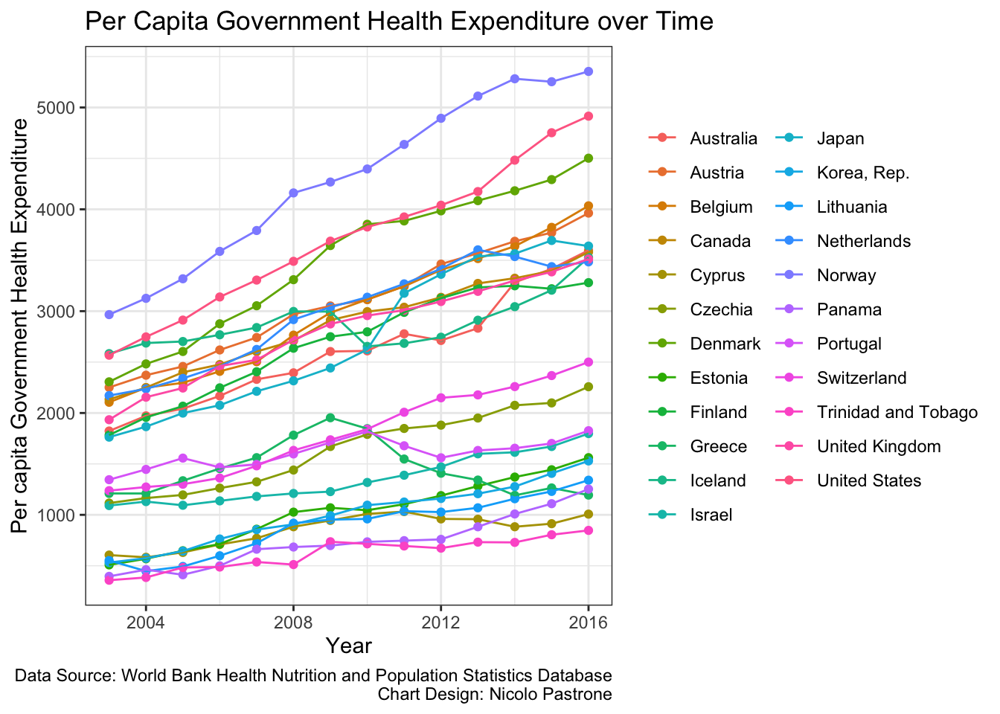
Similarly, all countries showed increased private health expenditure per capita from 2003-2016.
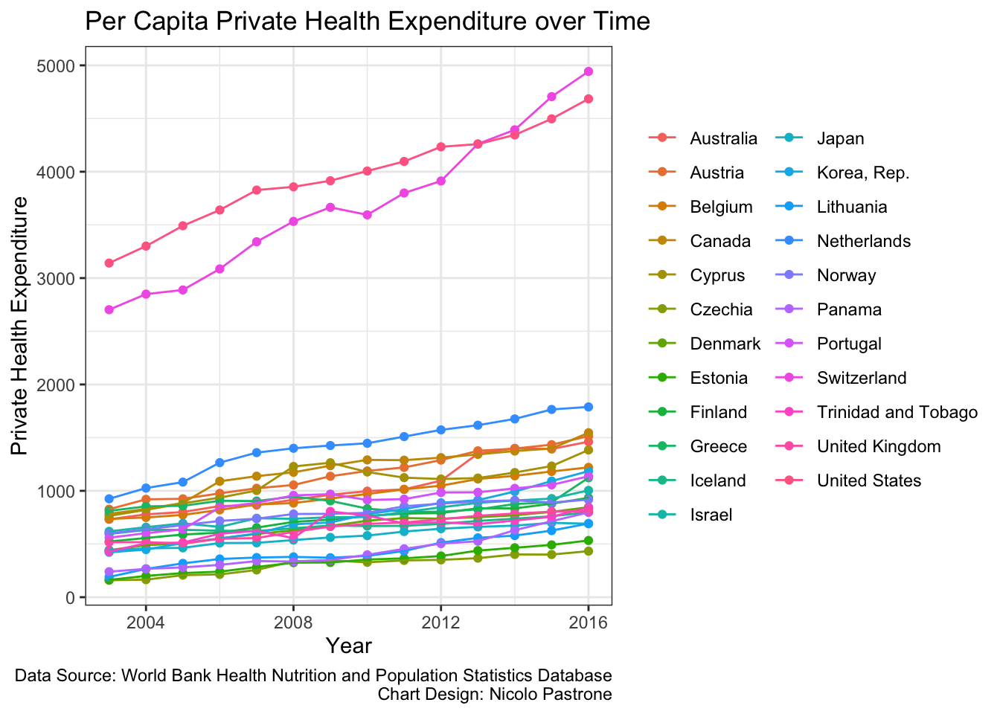
Visually, the countries in our dataset show mix results regarding the trends of health outcomes over the period studied. All countries showed a rise in the percentage of overweight adults over the period studied.
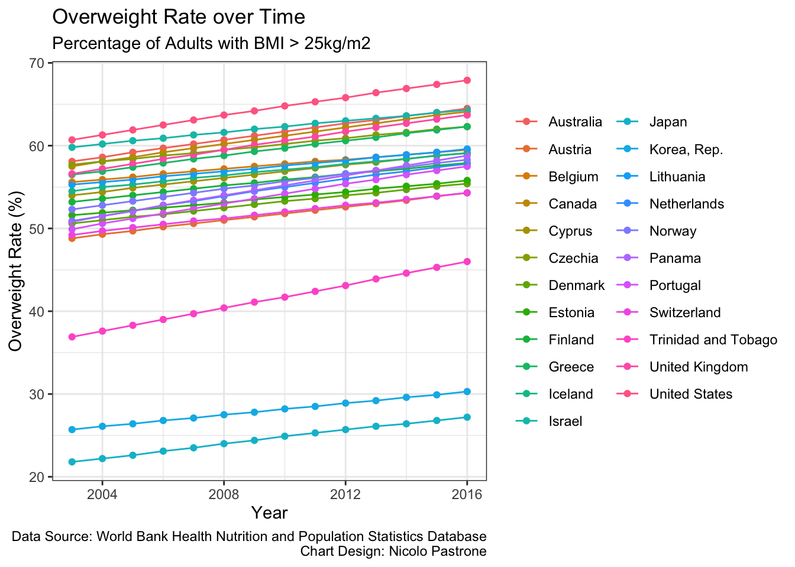
All countries studied other than Czechia (Czech Republic), Panama, Trinidad and Tobago, and the United States showed a fall in the rate of hypertension from 2003-2016.
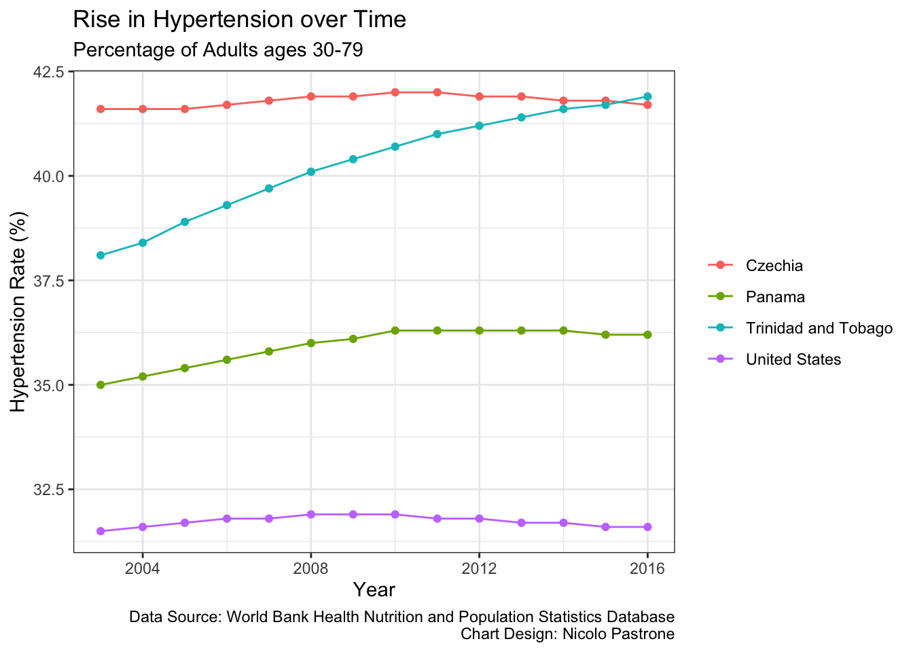
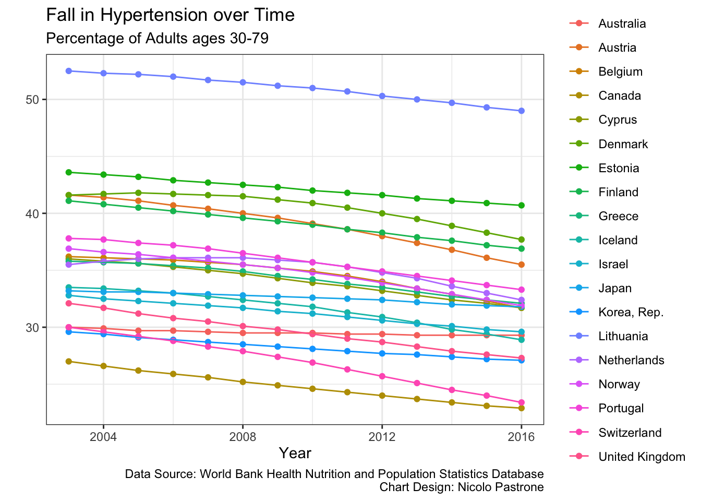
Over the same period, the NCD mortality rate declined in all countries in our dataset.
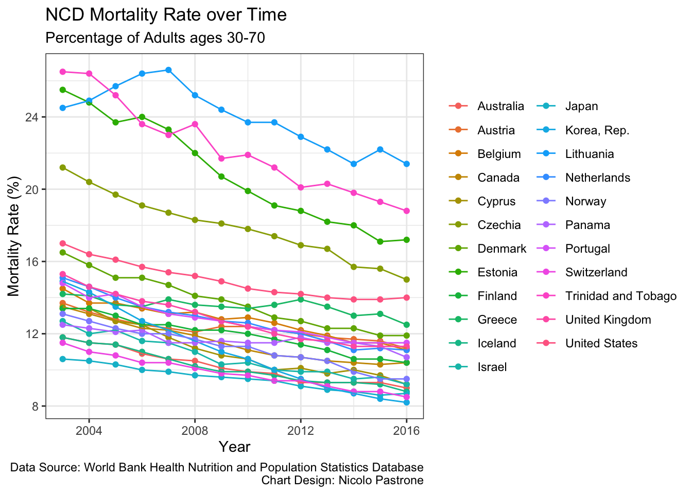
Government health expenditure and private health expenditure show similar results when plotted against the examined health outcomes. Globally, the data show a positive relationship between both types of health expenditure and the rate of overweight adults.
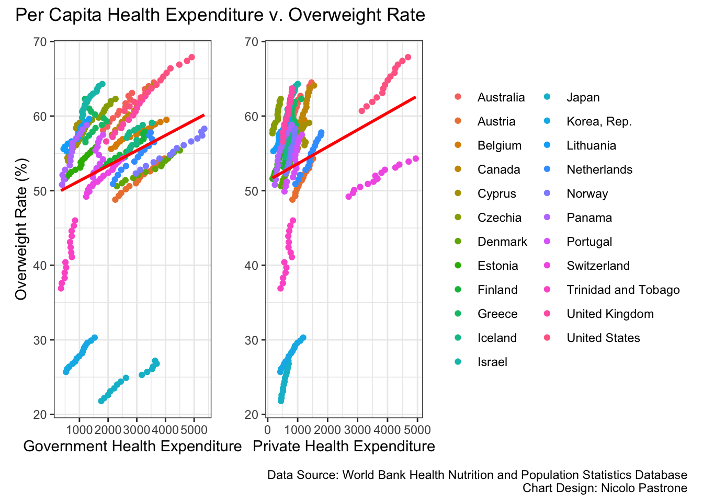
Both government health expenditure and private health expenditure show negative relationships with the rate of hypertension, though private health expenditure shows a stronger negative relationship.
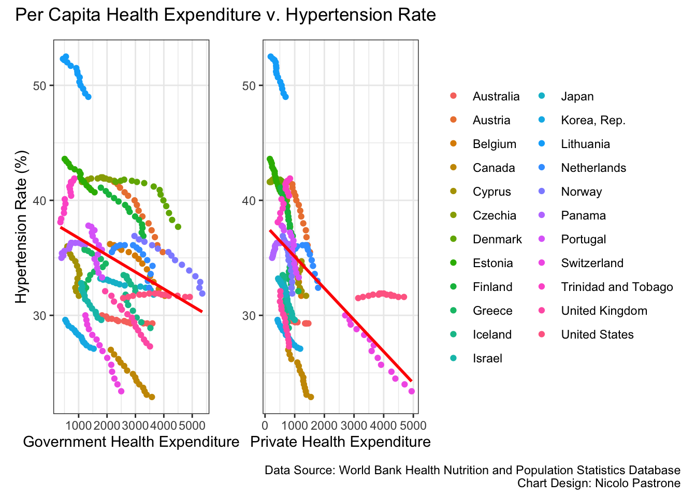
Both types of health expenditure show negative relationships with the rate of mortality from NCDs, and government health expenditure presents a stronger negative relationship.
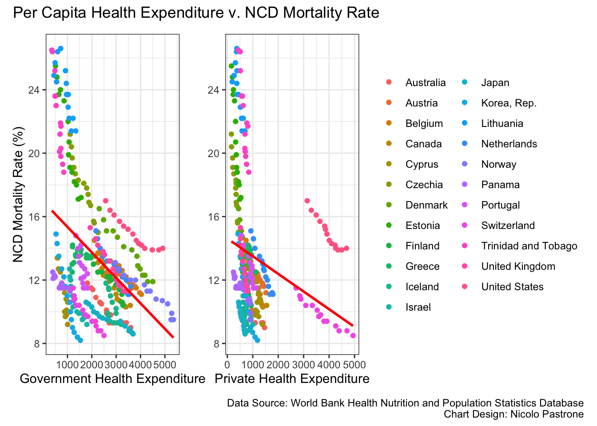
Preliminary Model
Within the scholarly literature, researchers utilized a variety of models to predict health outcomes from health expenditure, including two-stage least squares models – as in the case of Ibukun (2021) – and feasible generalized least squares models, as in the case of Singh et al. (2021).[25][26] This research follows the methodology of Novignon et al. (2012) and Rahman et al. (2018) by using a panel data estimation method to account for temporal and spatial dependencies within the data.[27][28] Specifically, the panel data estimation method controls for temporal autocorrelation across years and spatial autocorrelation across countries. Taking inspiration from Novignon et al. (2012) and Baltagi et al. (2007), this research uses the following health outcome model:[29][30]
\[ y_{it} = X_{it} \beta + \varepsilon_{it}, \quad i = 1, \dots, N, \; t = 1, \dots, T \tag{1} \]
\[ \varepsilon_{it} = \mu W + \phi u_{t-1,i} + \epsilon_{it} \tag{2, Fixed Effects} \]
\[ \varepsilon_{it} = \mu_i + \phi u_{t-1,i} + \epsilon_{it} \tag{3, Random Effects} \]
Where \(y_{it}\) is a vector of response variables in country \(i\) at year \(t\), \(X\) is a vector of predictor variables, \(\beta\) is a vector of coefficients, and \(\varepsilon_{it}\) is a vector of regression disturbances, or residuals.
The second and third equations are modeled after Baltagi et al. (2007), decomposing the regression disturbance into time-invariant error, denoted by \(\mu\), temporal error, denoted by \(\phi u_{t-1,i}\) with the autoregressive parameter \(\phi\), and idiosyncratic error, denoted by \(\epsilon_{it}\).
The third equation, representing a fixed effects estimation method, includes the spatial weights matrix \(W\) to control for spatial autocorrelation. Both equations for \(u_{it}\) are included because this research tests both fixed effects and random effects estimation methods and compares the effectiveness of each model.
In addition to health expenditure, this study also considers the effects of four control variables: real per capita income, urban population rate, unemployment rate, and caloric supply. Economic theory suggests that greater real income results in greater access to shelter, healthy food, and better medicine, all of which theoretically increase the likelihood of positive health outcomes. Urban population rate controls for lifestyle differences between urban and rural populations that may drastically affect health outcomes. The rate of unemployment may also affect health outcomes and access to health care, especially in countries with health care systems dominated by employer-sponsored health insurance, as in the case of the United States. Caloric supply – useful to predict calorie intake – may have significant effects on health outcomes such as overweight and obesity, hypertension, and diabetes, therefore affecting all relevant variables. To examine the effects of government health expenditure, private health expenditure, real per capita income, urban population rate, unemployment rate, and caloric supply on health outcomes, this study specifies the following equation:
\[ HS_{it} = \beta_0 + \beta_1 GVX_{it} + \beta_2 PRX_{it} + \beta_3 RPI_{it} + \beta_4 UBP_{it} + \beta_5 UMP_{it} + \beta_6 CLR_{it} + \varepsilon_{it} \tag{4} \] Where HS denotes the examined health outcomes: the rate of overweight adults, the rate of adults ages 30-79 with hypertension, and the mortality rate from NCDs, GVX denotes the amount of per capita government health expenditure, PRX denotes the amount of per capita private health care expenditure, RPI denotes real per capita income (measured in terms of GDP per capita, adjusted for purchasing power parity), UBP denotes the percentage of the population living in urban areas, UMP denotes the percentage of the labor force without employment, and CLR denotes the food supply (measured in kilocalories) for each country \(i\) in year \(t\).
Revised Model
After analyzing the preliminary model, the model was revised to adjust for severe multicollinearity among our predictors. Variance Inflation Factor (VIF) of 6.63 was observed for RPI and VIF of 4.77 was found for GVX.
vif
private_health_exppc_ppp 2.183233
government_health_exppc_ppp 4.767139
gdppc_ppp 6.633707
unemployment_rate 1.309776
urban_population 1.365895
kcal_per_capita 1.535504Significant correlation was found between GVX and RPI (0.83) as well as PRX and RPI (0.61).
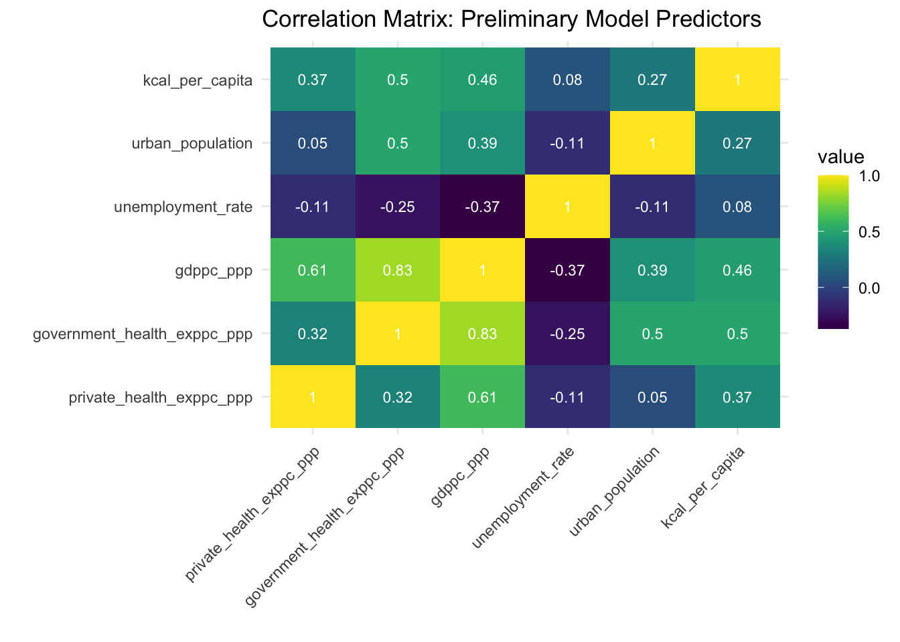
To adjust for multicollinearity, bivariate regressions were run for each other predictor variable on RPI, then a new model was created with RPI and the residuals of the bivariate regressions:
\[ HS_{it} = \beta_0 + \beta_1 GVXT_{it} + \beta_2 PRXT_{it} + \beta_3 RPI_{it} + \beta_4 UBPT_{it} + \beta_5 UMPT_{it} + \beta_6 CLRT_{it} + \varepsilon_{it} \tag{5} \]
Where:
\[ GVXT_{it} = \varepsilon_{it} = GVX_{it} - \beta_0 - \beta_1 RPI_{it} \tag{6} \]
\[ PRXT_{it} = \varepsilon_{it} = PRX_{it} - \beta_0 - \beta_1 RPI_{it} \tag{7} \]
\[ UBPT_{it} = \varepsilon_{it} = UBP_{it} - \beta_0 - \beta_1 RPI_{it} \tag{8} \]
\[ UMPT_{it} = \varepsilon_{it} = UMP_{it} - \beta_0 - \beta_1 RPI_{it} \tag{9} \]
\[ CLRT_{it} = \varepsilon_{it} = CLR_{it} - \beta_0 - \beta_1 RPI_{it} \tag{10} \] This model can be decomposed into the following three equations:
\[ RAO_{it} = \beta_0 + \beta_1 GVXT_{it} + \beta_2 PRXT_{it} + \beta_3 RPI_{it} + \beta_4 UBPT_{it} + \beta_5 UMPT_{it} + \beta_6 CLRT_{it} + \varepsilon_{it} \tag{11} \]
\[ RAH_{it} = \beta_0 + \beta_1 GVXT_{it} + \beta_2 PRXT_{it} + \beta_3 RPI_{it} + \beta_4 UBPT_{it} + \beta_5 UMPT_{it} + \beta_6 CLRT_{it} + \varepsilon_{it} \tag{12} \]
\[ NDM_{it} = \beta_0 + \beta_1 GVXT_{it} + \beta_2 PRXT_{it} + \beta_3 RPI_{it} + \beta_4 UBPT_{it} + \beta_5 UMPT_{it} + \beta_6 CLRT_{it} + \varepsilon_{it} \tag{13} \]
Where ROA denotes the Rate of Overweight Adults, RAH denotes the Rate of Adults (ages 30-79) with Hypertension, and NDM denotes the chronic Non-communicable Disease Mortality rate.
Multicollinearity among predictors subsided with the revised model. VIF was lowered to a range between 1 and 1.27 for revised model predictors.
vif
gdp_adjusted_private_health_exppc_ppp 1.060867
gdp_adjusted_government_health_exppc_ppp 1.143029
gdppc_ppp 1.000000
gdp_adjusted_unemployment_rate 1.148944
gdp_adjusted_urban_population_rate 1.271535
gdp_adjusted_kcal_supply 1.104072Correlation was reduced to a high of 0.34 among predictors, with 0 correlation between real per capita income and other variables.
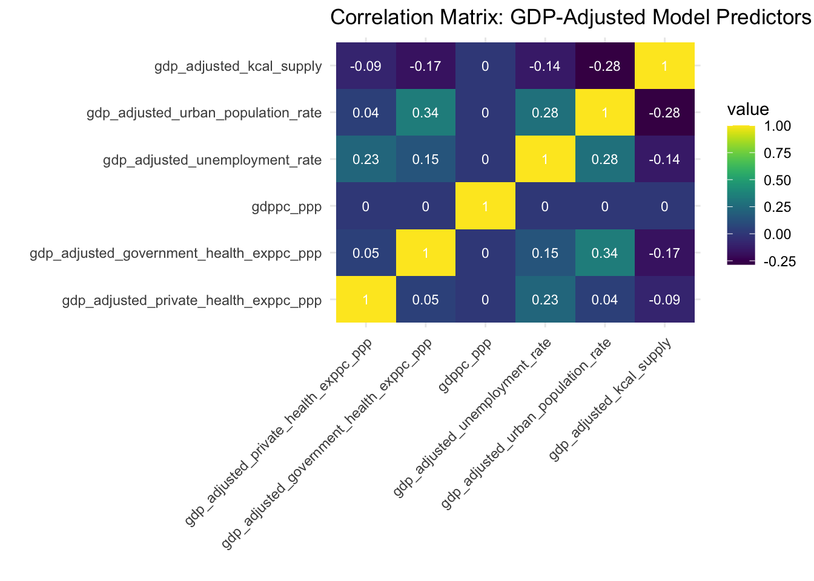
Revised Methodology
After finalizing the model, for each response variable, a fixed effects generalized least squares (GLS) model and random effects GLS model were run. The fixed effects GLS model controls for spatial autocorrelation across countries, while the random effects model allows for spatial autocorrelation and heterogeneity across countries, therefore simplifying the regression disturbance (see Equation 3). A Hausman test was performed to test whether spatial autocorrelation was present in the model, and as a result, whether the simpler random effects model could be favored or the more restrictive fixed effects model was necessary. After a model was selected, an interaction term between GVXT and PRXT was integrated into the model and evaluated for potential model improvement.
Results
Health Expenditure and the Rate of Overweight Adults
Results from the fixed effects and random effects models predicting the rate of overweight adults from the level of private and government health expenditure are presented here:
Fixed Effects
Oneway (individual) effect Within Model
Call:
plm(formula = overweight_rate ~ gdp_adjusted_private_health_exppc_ppp +
gdp_adjusted_government_health_exppc_ppp + gdppc_ppp + gdp_adjusted_unemployment_rate +
gdp_adjusted_urban_population_rate + gdp_adjusted_kcal_supply,
data = health_data_gdp_adjusted, model = "within", index = c("country",
"year"))
Balanced Panel: n = 23, T = 14, N = 322
Residuals:
Min. 1st Qu. Median 3rd Qu. Max.
-3.1523719 -0.4040478 0.0037509 0.3383788 4.1338438
Coefficients:
Estimate Std. Error t-value
gdp_adjusted_private_health_exppc_ppp 1.1347e-03 3.5076e-04 3.2349
gdp_adjusted_government_health_exppc_ppp 8.2787e-04 2.0461e-04 4.0462
gdppc_ppp 2.9388e-04 8.0098e-06 36.6905
gdp_adjusted_unemployment_rate 1.0120e-01 1.7470e-02 5.7928
gdp_adjusted_urban_population_rate 3.7627e-01 4.3753e-02 8.5999
gdp_adjusted_kcal_supply 4.1823e-03 5.1281e-04 8.1556
Pr(>|t|)
gdp_adjusted_private_health_exppc_ppp 0.001356 **
gdp_adjusted_government_health_exppc_ppp 6.665e-05 ***
gdppc_ppp < 2.2e-16 ***
gdp_adjusted_unemployment_rate 1.784e-08 ***
gdp_adjusted_urban_population_rate 4.898e-16 ***
gdp_adjusted_kcal_supply 1.028e-14 ***
---
Signif. codes: 0 '***' 0.001 '**' 0.01 '*' 0.05 '.' 0.1 ' ' 1
Total Sum of Squares: 1072.9
Residual Sum of Squares: 167.31
R-Squared: 0.84405
Adj. R-Squared: 0.82915
F-statistic: 264.311 on 6 and 293 DF, p-value: < 2.22e-16Random Effects
Oneway (individual) effect Random Effect Model
(Swamy-Arora's transformation)
Call:
plm(formula = overweight_rate ~ gdp_adjusted_private_health_exppc_ppp +
gdp_adjusted_government_health_exppc_ppp + gdppc_ppp + gdp_adjusted_unemployment_rate +
gdp_adjusted_urban_population_rate + gdp_adjusted_kcal_supply,
data = health_data_gdp_adjusted, model = "random", index = c("country",
"year"))
Balanced Panel: n = 23, T = 14, N = 322
Effects:
var std.dev share
idiosyncratic 0.5710 0.7557 0.006
individual 100.4766 10.0238 0.994
theta: 0.9799
Residuals:
Min. 1st Qu. Median 3rd Qu. Max.
-3.348226 -0.465010 -0.015014 0.417448 3.940075
Coefficients:
Estimate Std. Error z-value
(Intercept) 4.3227e+01 2.1093e+00 20.4934
gdp_adjusted_private_health_exppc_ppp 1.1347e-03 3.5065e-04 3.2360
gdp_adjusted_government_health_exppc_ppp 8.2787e-04 2.0454e-04 4.0475
gdppc_ppp 2.9361e-04 8.0013e-06 36.6952
gdp_adjusted_unemployment_rate 1.0120e-01 1.7464e-02 5.7947
gdp_adjusted_urban_population_rate 3.7627e-01 4.3739e-02 8.6027
gdp_adjusted_kcal_supply 4.1823e-03 5.1265e-04 8.1582
Pr(>|z|)
(Intercept) < 2.2e-16 ***
gdp_adjusted_private_health_exppc_ppp 0.001212 **
gdp_adjusted_government_health_exppc_ppp 5.177e-05 ***
gdppc_ppp < 2.2e-16 ***
gdp_adjusted_unemployment_rate 6.846e-09 ***
gdp_adjusted_urban_population_rate < 2.2e-16 ***
gdp_adjusted_kcal_supply 3.401e-16 ***
---
Signif. codes: 0 '***' 0.001 '**' 0.01 '*' 0.05 '.' 0.1 ' ' 1
Total Sum of Squares: 1085
Residual Sum of Squares: 179.76
R-Squared: 0.83433
Adj. R-Squared: 0.83117
Chisq: 1586.36 on 6 DF, p-value: < 2.22e-16Hausman Test
Hausman Test
data: overweight_rate ~ gdp_adjusted_private_health_exppc_ppp + gdp_adjusted_government_health_exppc_ppp + ...
chisq = 0.55472, df = 6, p-value = 0.9971
alternative hypothesis: one model is inconsistentThe Hausman Test shows no evidence of inconsistency between the fixed effects and random effects models, so our analysis favors the simpler random effects model. This finding aligns with observed similarities in model results, barring slight changes in standard errors, critical values and p-values. The preferred random effects model in Output 2 has strong explanatory power, evidenced by an Adjusted R-squared value of 0.831. All predictors in the model show meaningful, statistically significant results, indicating that each predictor in the model influences the rate of overweight adults, while holding all other predictors constant. Based on the model results, a $1000[31] increase in private health expenditure per capita is estimated to increase the rate of overweight adults by 1.1347 percent, while holding government health expenditure, real per capita income, unemployment rate, urban population rate, and per capita calorie supply constant, and controlling for temporal and spatial effects. A $1000 increase in government health expenditure per capita is estimated to increase the rate of overweight adults by 0.8278 percent, while holding constant all other predictors in the model and controlling for temporal and spatial effects.
Health Expenditure and the Rate of Hypertension
Results from the fixed effects and random effects models predicting the rate of adults with hypertension from the level of private and government health expenditure are presented here:
Fixed Effects
Oneway (individual) effect Within Model
Call:
plm(formula = hypertension_rate ~ gdp_adjusted_private_health_exppc_ppp +
gdp_adjusted_government_health_exppc_ppp + gdppc_ppp + gdp_adjusted_unemployment_rate +
gdp_adjusted_urban_population_rate + gdp_adjusted_kcal_supply,
data = health_data_gdp_adjusted, model = "within", index = c("country",
"year"))
Balanced Panel: n = 23, T = 14, N = 322
Residuals:
Min. 1st Qu. Median 3rd Qu. Max.
-2.337579 -0.471569 0.088011 0.499604 1.796456
Coefficients:
Estimate Std. Error t-value
gdp_adjusted_private_health_exppc_ppp -4.0782e-05 3.4105e-04 -0.1196
gdp_adjusted_government_health_exppc_ppp -2.5242e-04 1.9894e-04 -1.2688
gdppc_ppp -1.6424e-04 7.7881e-06 -21.0888
gdp_adjusted_unemployment_rate -1.7977e-01 1.6986e-02 -10.5830
gdp_adjusted_urban_population_rate 1.1117e-04 4.2542e-02 0.0026
gdp_adjusted_kcal_supply 1.8589e-03 4.9862e-04 3.7281
Pr(>|t|)
gdp_adjusted_private_health_exppc_ppp 0.9048992
gdp_adjusted_government_health_exppc_ppp 0.2055105
gdppc_ppp < 2.2e-16 ***
gdp_adjusted_unemployment_rate < 2.2e-16 ***
gdp_adjusted_urban_population_rate 0.9979168
gdp_adjusted_kcal_supply 0.0002315 ***
---
Signif. codes: 0 '***' 0.001 '**' 0.01 '*' 0.05 '.' 0.1 ' ' 1
Total Sum of Squares: 487.52
Residual Sum of Squares: 158.18
R-Squared: 0.67554
Adj. R-Squared: 0.64453
F-statistic: 101.673 on 6 and 293 DF, p-value: < 2.22e-16Random Effects
Oneway (individual) effect Random Effect Model
(Swamy-Arora's transformation)
Call:
plm(formula = hypertension_rate ~ gdp_adjusted_private_health_exppc_ppp +
gdp_adjusted_government_health_exppc_ppp + gdppc_ppp + gdp_adjusted_unemployment_rate +
gdp_adjusted_urban_population_rate + gdp_adjusted_kcal_supply,
data = health_data_gdp_adjusted, model = "random", index = c("country",
"year"))
Balanced Panel: n = 23, T = 14, N = 322
Effects:
var std.dev share
idiosyncratic 0.5399 0.7348 0.019
individual 28.5652 5.3446 0.981
theta: 0.9633
Residuals:
Min. 1st Qu. Median 3rd Qu. Max.
-2.3793376 -0.5136889 0.0061904 0.5373139 1.9351142
Coefficients:
Estimate Std. Error z-value
(Intercept) 4.0861e+01 1.1488e+00 35.5670
gdp_adjusted_private_health_exppc_ppp -4.0782e-05 3.4094e-04 -0.1196
gdp_adjusted_government_health_exppc_ppp -2.5242e-04 1.9888e-04 -1.2692
gdppc_ppp -1.6473e-04 7.7665e-06 -21.2101
gdp_adjusted_unemployment_rate -1.7977e-01 1.6981e-02 -10.5864
gdp_adjusted_urban_population_rate 1.1117e-04 4.2528e-02 0.0026
gdp_adjusted_kcal_supply 1.8589e-03 4.9846e-04 3.7293
Pr(>|z|)
(Intercept) < 2.2e-16 ***
gdp_adjusted_private_health_exppc_ppp 0.904787
gdp_adjusted_government_health_exppc_ppp 0.204357
gdppc_ppp < 2.2e-16 ***
gdp_adjusted_unemployment_rate < 2.2e-16 ***
gdp_adjusted_urban_population_rate 0.997914
gdp_adjusted_kcal_supply 0.000192 ***
---
Signif. codes: 0 '***' 0.001 '**' 0.01 '*' 0.05 '.' 0.1 ' ' 1
Total Sum of Squares: 501.9
Residual Sum of Squares: 169.95
R-Squared: 0.66139
Adj. R-Squared: 0.65494
Chisq: 615.272 on 6 DF, p-value: < 2.22e-16Hausman Test
Hausman Test
data: hypertension_rate ~ gdp_adjusted_private_health_exppc_ppp + gdp_adjusted_government_health_exppc_ppp + ...
chisq = 0.70356, df = 6, p-value = 0.9944
alternative hypothesis: one model is inconsistentThe Hausman Test shows no evidence of inconsistency between the fixed effects and random effects models, so our analysis favors the simpler random effects model. This finding aligns with observed similarities in model results, barring slight changes in estimates, standard errors, critical values and p-values. The preferred random effects model in Output 5 has moderate to high explanatory power, evidenced by an Adjusted R-squared value of 0.655. Three out of six predictors show meaningful, statistically significant results (real per capita income, unemployment rate, and per capita calorie supply), but our parameters of interest (private health expenditure per capita and government health expenditure per capita) do not yield influential results and cannot be deemed significant predictors for rates of hypertension. Our model estimates that – while holding all other predictors in the model constant and controlling for spatial and temporal effects – a $1000 increase in private health expenditure per capita would lower the rate of hypertension by 0.0408 percent (p-value = 0.9048), and that a $1000 increase in government health expenditure per capita would lower the rate of hypertension by 0.2524 percent (p-value = 0.2044), but considering the high p-value of each estimate, these findings have no meaningful interpretation, especially in the case of private health expenditure.
Health Expenditure and NCD Mortality Rate
Results from the fixed effects and random effects models predicting the rate of NCD mortality from the level of private and government health expenditure are presented here:
Fixed Effects
Oneway (individual) effect Within Model
Call:
plm(formula = disease_mortality_rate ~ gdp_adjusted_private_health_exppc_ppp +
gdp_adjusted_government_health_exppc_ppp + gdppc_ppp + gdp_adjusted_unemployment_rate +
gdp_adjusted_urban_population_rate + gdp_adjusted_kcal_supply,
data = health_data_gdp_adjusted, model = "within", index = c("country",
"year"))
Balanced Panel: n = 23, T = 14, N = 322
Residuals:
Min. 1st Qu. Median 3rd Qu. Max.
-3.290770 -0.406381 -0.018967 0.374604 2.927297
Coefficients:
Estimate Std. Error t-value
gdp_adjusted_private_health_exppc_ppp 3.8486e-04 3.8938e-04 0.9884
gdp_adjusted_government_health_exppc_ppp -5.7103e-04 2.2713e-04 -2.5141
gdppc_ppp -2.0256e-04 8.8917e-06 -22.7812
gdp_adjusted_unemployment_rate -9.6680e-02 1.9394e-02 -4.9851
gdp_adjusted_urban_population_rate 6.2379e-02 4.8571e-02 1.2843
gdp_adjusted_kcal_supply -1.9462e-03 5.6928e-04 -3.4187
Pr(>|t|)
gdp_adjusted_private_health_exppc_ppp 0.3237730
gdp_adjusted_government_health_exppc_ppp 0.0124710 *
gdppc_ppp < 2.2e-16 ***
gdp_adjusted_unemployment_rate 1.061e-06 ***
gdp_adjusted_urban_population_rate 0.2000525
gdp_adjusted_kcal_supply 0.0007184 ***
---
Signif. codes: 0 '***' 0.001 '**' 0.01 '*' 0.05 '.' 0.1 ' ' 1
Total Sum of Squares: 600.48
Residual Sum of Squares: 206.19
R-Squared: 0.65663
Adj. R-Squared: 0.62381
F-statistic: 93.3839 on 6 and 293 DF, p-value: < 2.22e-16Random Effects
Oneway (individual) effect Random Effect Model
(Swamy-Arora's transformation)
Call:
plm(formula = disease_mortality_rate ~ gdp_adjusted_private_health_exppc_ppp +
gdp_adjusted_government_health_exppc_ppp + gdppc_ppp + gdp_adjusted_unemployment_rate +
gdp_adjusted_urban_population_rate + gdp_adjusted_kcal_supply,
data = health_data_gdp_adjusted, model = "random", index = c("country",
"year"))
Balanced Panel: n = 23, T = 14, N = 322
Effects:
var std.dev share
idiosyncratic 0.7037 0.8389 0.053
individual 12.6487 3.5565 0.947
theta: 0.9371
Residuals:
Min. 1st Qu. Median 3rd Qu. Max.
-2.853650 -0.494207 -0.024573 0.384271 3.365372
Coefficients:
Estimate Std. Error z-value
(Intercept) 2.0683e+01 8.0600e-01 25.6610
gdp_adjusted_private_health_exppc_ppp 3.8486e-04 3.8878e-04 0.9899
gdp_adjusted_government_health_exppc_ppp -5.7103e-04 2.2678e-04 -2.5180
gdppc_ppp -2.0240e-04 8.8145e-06 -22.9617
gdp_adjusted_unemployment_rate -9.6680e-02 1.9364e-02 -4.9929
gdp_adjusted_urban_population_rate 6.2379e-02 4.8495e-02 1.2863
gdp_adjusted_kcal_supply -1.9462e-03 5.6840e-04 -3.4240
Pr(>|z|)
(Intercept) < 2.2e-16 ***
gdp_adjusted_private_health_exppc_ppp 0.322208
gdp_adjusted_government_health_exppc_ppp 0.011804 *
gdppc_ppp < 2.2e-16 ***
gdp_adjusted_unemployment_rate 5.949e-07 ***
gdp_adjusted_urban_population_rate 0.198342
gdp_adjusted_kcal_supply 0.000617 ***
---
Signif. codes: 0 '***' 0.001 '**' 0.01 '*' 0.05 '.' 0.1 ' ' 1
Total Sum of Squares: 619.94
Residual Sum of Squares: 220.98
R-Squared: 0.64354
Adj. R-Squared: 0.63675
Chisq: 568.685 on 6 DF, p-value: < 2.22e-16Hausman Test
Hausman Test
data: disease_mortality_rate ~ gdp_adjusted_private_health_exppc_ppp + ...
chisq = 0.02061, df = 6, p-value = 1
alternative hypothesis: one model is inconsistentThe Hausman Test shows no evidence of inconsistency between the fixed effects and random effects models, so our analysis favors the simpler random effects model. This finding aligns with observed similarities in model results, barring slight changes in standard errors, critical values and p-values. The preferred random effects model in Output 8 has moderate to high explanatory power, evidenced by an Adjusted R-squared value of 0.637. All but two predictors in the model show meaningful, statistically significant results. The model predicts that private health expenditure does not meaningfully influence the rate of NCD mortality, while government health expenditure is predicted to lower the rate of NCD mortality. Based on the model results, a $1000 increase in government health expenditure per capita is estimated to decrease the rate of NCD mortality by 0.571 percent (p-value = 0.0118), while holding private health expenditure, real per capita income, unemployment rate, urban population rate, and per capita calorie supply constant and controlling for temporal and spatial effects. The model also predicts that a $1000 increase in private health expenditure would raise the rate of NCD mortality by 0.3849, but this finding has no meaningful interpretation, considering the high p-value of 0.3222.
Interaction Between Private and Government Health Expenditure
After each model was evaluated, an interaction term between private health expenditure and government health expenditure was added each model. Wald Tests were conducted to examine whether the interaction term had a meaningful effect on each model, and for all models, the Wald Test yielded insignificant results, providing no evidence that the interaction term improved any of our models.[32] The interaction terms were subsequently removed.
Wald test
Model 1: overweight_rate ~ gdp_adjusted_private_health_exppc_ppp + gdp_adjusted_government_health_exppc_ppp +
gdppc_ppp + gdp_adjusted_unemployment_rate + gdp_adjusted_urban_population_rate +
gdp_adjusted_kcal_supply
Model 2: overweight_rate ~ gdp_adjusted_private_health_exppc_ppp + gdp_adjusted_government_health_exppc_ppp +
gdppc_ppp + gdp_adjusted_unemployment_rate + gdp_adjusted_urban_population_rate +
gdp_adjusted_kcal_supply + gdp_adjusted_private_health_exppc_ppp:gdp_adjusted_government_health_exppc_ppp
Res.Df Df Chisq Pr(>Chisq)
1 315
2 314 1 1.5042 0.22Wald test
Model 1: hypertension_rate ~ gdp_adjusted_private_health_exppc_ppp + gdp_adjusted_government_health_exppc_ppp +
gdppc_ppp + gdp_adjusted_unemployment_rate + gdp_adjusted_urban_population_rate +
gdp_adjusted_kcal_supply
Model 2: hypertension_rate ~ gdp_adjusted_private_health_exppc_ppp + gdp_adjusted_government_health_exppc_ppp +
gdppc_ppp + gdp_adjusted_unemployment_rate + gdp_adjusted_urban_population_rate +
gdp_adjusted_kcal_supply + gdp_adjusted_private_health_exppc_ppp:gdp_adjusted_government_health_exppc_ppp
Res.Df Df Chisq Pr(>Chisq)
1 315
2 314 1 1.4583 0.2272Wald test
Model 1: disease_mortality_rate ~ gdp_adjusted_private_health_exppc_ppp +
gdp_adjusted_government_health_exppc_ppp + gdppc_ppp + gdp_adjusted_unemployment_rate +
gdp_adjusted_urban_population_rate + gdp_adjusted_kcal_supply
Model 2: disease_mortality_rate ~ gdp_adjusted_private_health_exppc_ppp +
gdp_adjusted_government_health_exppc_ppp + gdppc_ppp + gdp_adjusted_unemployment_rate +
gdp_adjusted_urban_population_rate + gdp_adjusted_kcal_supply +
gdp_adjusted_private_health_exppc_ppp:gdp_adjusted_government_health_exppc_ppp
Res.Df Df Chisq Pr(>Chisq)
1 315
2 314 1 2.8794 0.08972 .
---
Signif. codes: 0 '***' 0.001 '**' 0.01 '*' 0.05 '.' 0.1 ' ' 1Discussion: Implications and Limitations
Health Expenditure and the Rate of Overweight Adults
The findings of the overweight model suggest higher levels of both private and government health expenditure are associated with higher levels of overweight adults in our data. However, a realistic interpretation of these findings is significantly more complex, as underlying reverse causality may influence this model. Cawley et al. (2021) found that obese adults in the United States commanded 100 percent higher health care costs than those with normal weight.[33] The rise in costs also increased with each class of obesity, ranging from 68.4 percent for class 1 to 233.6 percent for class 3. The researchers estimated obesity raised annual personal health expenditures by $2,868 for those covered by public health insurance and $2,058 for those with private health insurance. Other research, such as Finkelstein et al. (2009) and Broek-Altenburg et al. (2022) has consistently linked higher health expenditure to obesity and overweight.[34][35] With clear outside evidence of overweight and obesity raising medical costs, the findings of this research – which suggest that higher health expenditure raises the rate of overweight adults – cannot be meaningfully interpreted in isolation. To suggest that less health expenditure would lead to less overweight adults would be an inappropriate extrapolation of the findings in this research. However, a more conservative implication could be that for the examined data, health expenditure does not simply and automatically lead to lower rates of overweight adults, and this relationship deserves further investigation.
Health Expenditure and the Rate of Hypertension
The findings of the hypertension model suggest both private and government health expenditure have no significant effect on the rate of hypertension in our data. A similar limitation is present in this model as with the overweight model: higher rates of hypertension are associated with higher health expenditure, and reverse causality may limit the interpretability of these findings. Kirkland et al. (2018) estimates American adults with hypertension spent an average of $1920 more annually on health expenditure compared to those without hypertension.[36] Wierzejska et al. (2020) reaches a similar conclusion on a global scale.[37] Due to the limitations of this model and the potential effects of reverse causality, the findings of this research cannot be oversimplified by claiming that health expenditure has no effect on hypertension. However, these findings do warrant further study into the relationship between health expenditure and hypertension, and this research introduces the possibility that current medical expenditure is not providing sufficient evidence of effectiveness in lowering rates of hypertension.
Health Expenditure and the Rate of NCD Mortality
The findings of the NCD mortality model are perhaps the most significant findings in this research. While this model is not immune to the limitation of reverse causality – potentially present in both the overweight model and the hypertension model – these findings suggest a meaningful divergence in results between government health expenditure and private health expenditure that warrants further consideration. For the data studied, this research suggests government health expenditure is associated with lower levels of NCD mortality, while no such association exists between private health expenditure and NCD mortality. Since the limitation of reverse causality, as well as other potential limitations such as endogeneity, are likely to affect both private and government health expenditure in similar ways, these findings can be meaningfully interpreted, suggesting that government health expenditure was more effective than private health expenditure in reducing rates of NCD mortality in the data examined. A $1000 increase in government health expenditure per capita is estimated to decrease the rate of NCD mortality by 0.571 percent (p-value = 0.0118), while holding constant all other predictors in the model constant and controlling for temporal and spatial effects.
Conclusion
This study aims to contribute to the expansion of the discussion of how different types of health expenditure affect chronic health outcomes around the world. The research analyzed a balanced panel of data from 23 developed countries over the period from 2003 to 2016, examining the effects of private health expenditure and government health expenditure on three different chronic health outcomes: chronic non-communicable disease (NCD) mortality, the rate of overweight adults, and the rate of adults ages 30-79 with hypertension. A random effects panel linear model – adjusted for multicollinearity – was used to examine this relationship. The models showed mixed findings, and the overweight model and hypertension model may be limited by reverse causality. The NCD model showed meaningful results suggesting that government health expenditure was effective in reducing rates of NCD mortality in the data studied, while private health expenditure showed no significant effect. A $1000 increase in government health expenditure per capita is estimated to decrease the rate of NCD mortality by 0.571 percent (p-value = 0.0118), while holding all other predictors in the model constant and controlling for temporal and spatial effects. This research highlights the need for further study into the bidirectional relationship between different types of health expenditure and chronic health conditions.
References and Notes
[1] “Life Expectancy by Country and in the World (2024).” Worldometer, 2024, www.worldometers.info/demographics/life-expectancy/.
[2] Novignon et al. “The Effects of Public and Private Health Care Expenditure on Health Status in Sub-Saharan Africa: New Evidence from Panel Data Analysis.” ProQuest, 2012, https://www.proquest.com/scholarly-journals/effects-public-private-health-care-expenditure-on/docview/1652951251/se-2?accountid=8285.
[3] Raeesi et al. “Effects of Private and Public Health Expenditure on Health Outcomes Among Countries with Different Health Care Systems: 2000 and 2014.” Medical Journal of the Islamic Republic of Iran, vol. 32, 2018, iums.ac.ir/article-1-5220-en.html.
[4] Rahman, et al. “Health Care Expenditure and Health Outcome Nexus: New Evidence from the SAARC-ASEAN Region.” ProQuest, 2018, https://www.proquest.com/scholarly-journals/health-care-expenditure-outcome-nexus-new/docview/2158401327/se-2?accountid=8285.
[5] Ibukun. “The Role of Governance in the Health Expenditure–Health Outcomes Nexus: Insights from West Africa.” ProQuest, 2021, https://www.proquest.com/scholarly-journals/role-governance-health-expenditure-outcomes-nexus/docview/2501439218/se-2?accountid=8285.
[6] “Noncommunicable Diseases.” Pan American Health Organization, www.paho.org/en/topics/noncommunicable-diseases.
[7] Singh, et al. “The dynamics of public and private health expenditure on health outcome in Southeast Asia.” EBSCOhost,2021, https://web.p.ebscohost.com/ehost/pdfviewer/pdfviewer?vid=0&sid=08c5f242-1842-445a-9292-7540cf764a07%40redis.
[8] Singh et al, “Health Expenditures and Health Outcomes in Central Europe and the Baltic Region.” The Baltic Region Journal, vol. 13, no. 1, 2024, journals.kantiana.ru/baltic_region/4501/.
[9] See citation 2
[10] See citation 3
[11] See citation 4
[12] See citation 5
[13] See citation 7
[14] See citation 8
[15] Freed et al, “Which Country is Truly Developed? COVID-19 has Answered the Question.” PMC, 2020, https://pmc.ncbi.nlm.nih.gov/articles/PMC7243834/.
[16] “Purchasing Power Parities (PPP).” OECD, www.oecd.org/sdd/prices-ppp/.
[17] “World Development Indicators.” World Bank, databank.worldbank.org/source/world-development-indicators.
[18] “Health Nutrition and Population Statistics.” World Bank, databank.worldbank.org/source/health-nutrition-and-population-statistics.
[19] “FAOSTAT.” Food and Agriculture Organization, www.fao.org/faostat/en/.
[20] “Health Nutrition and Population Statistics.” World Bank Data Catalog, datacatalog.worldbank.org/dataset/health-nutrition-and-population-statistics.
[21] “Health Nutrition and Population Statistics.” World Bank Data Catalog, datacatalog.worldbank.org/dataset/health-nutrition-and-population-statistics.
[22] “Metadata-03-04-01.pdf.” United Nations, unstats.un.org/sdgs/metadata/files/Metadata-03-04-01.pdf.
[23] “Noncommunicable Diseases.” World Health Organization, www.who.int/health-topics/noncommunicable-diseases.
[24] Ritchie, Hannah, and Max Roser. “Food Supply.” Our World in Data, ourworldindata.org/food-supply.
[25] See citation 5
[26] See citation 7
[27] See citation 2
[28] See citation 4
[29] See citation 2
[30] Baltagi, et al. “Testing for Serial Correlation, Spatial Autocorrelation and Random Effects Using Panel Data.” ScienceDirect, 2007. https://www.sciencedirect.com/science/article/pii/S0304407606002223.
[31] Measured in current international $ and adjusted for purchasing power parity.
[32] “Wald Test.” Wikipedia, en.wikipedia.org/wiki/Wald_test.
[33] Biener, et al. “Direct Medical Costs of Obesity in the United States and the Most Populous States.” PMC, 2017, www.ncbi.nlm.nih.gov/pmc/articles/PMC5359159/.
[34] Finkelstein, et al. “Annual Medical Spending Attributable To Obesity: Payer-And Service-Specific Estimates.” Health Affairs, 2009, https://www.healthaffairs.org/doi/10.1377/hlthaff.28.5.w822.
[35] Broek-Altenburg, et al. “Changes in Healthcare Spending Attributable to Obesity and Overweight: Payer- and Service-Specific Estimates.” BMC Public Health, 2020, https://bmcpublichealth.biomedcentral.com/articles/10.1186/s12889-022-13176-ybmcpublichealth.biomedcentral.com/articles/10.1186/s12889-020-09432-8.
[36] Kirkland, Elizabeth B., et al. “Trends in Healthcare Expenditures Among US Adults With Hypertension: National Estimates, 2003–2014.” Journal of the American Heart Association, 2018, www.ahajournals.org/doi/10.1161/JAHA.118.008731.
[37] Wierzejska, et al. et al. “A Global Perspective on the Costs of Hypertension: A Systematic Review.” PMC, 2020, https://pmc.ncbi.nlm.nih.gov/articles/PMC7444692/.